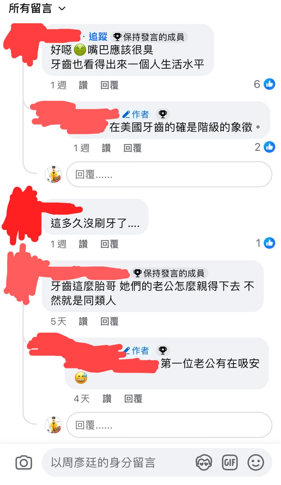
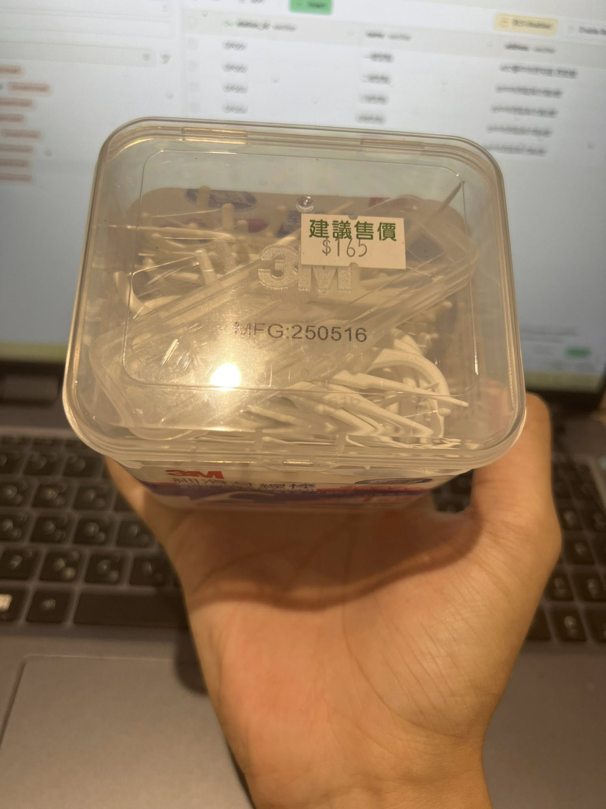
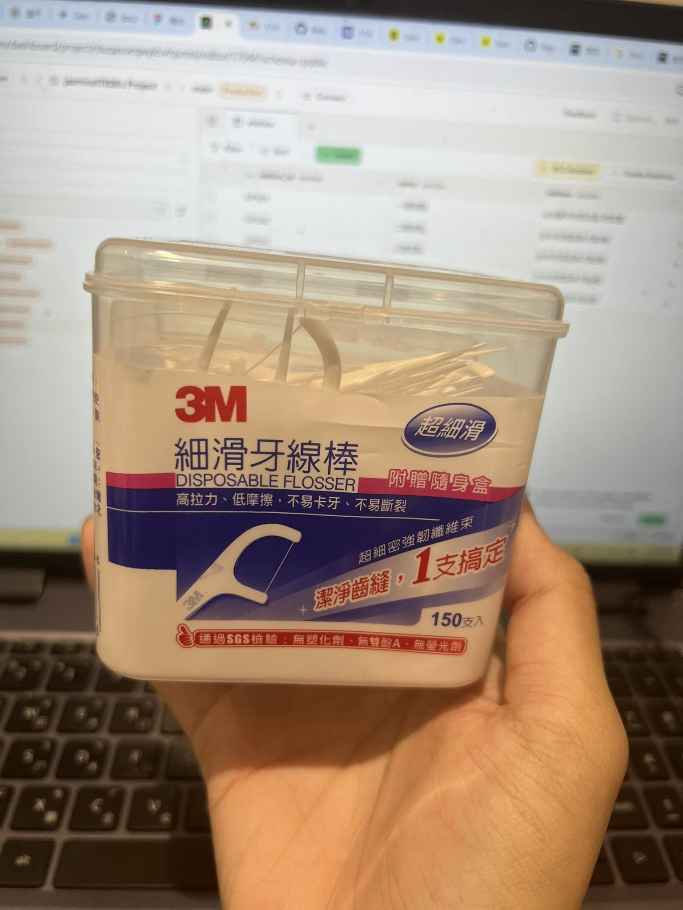

點擊上方的語言選單以切換語言
每次看到這種一口爛牙的媽媽就覺得小孩很可憐。 一來連把牙齒弄好的錢都感覺沒有，如何有錢讓孩子有良好的生活？ 二來最基本的衛生清潔觀念都沒有，別說妳懂得如何去照顧小孩。
看到這段貼文時，我想起許多人對口腔衛生仍存在一些迷思。 牙齒出現問題並不一定與貧富相關，而更多時候是因為缺乏正確的潔牙習慣。
只要養成以下兩個習慣，就能大幅改善口腔狀況：
牙線在便利超商就能買到，一盒約 NT$165，完全不貴。
 刷牙無法清除牙縫深處的殘渣，因此正確潔牙順序為：
✔ 先牙線 → 再刷牙
若殘渣留在牙縫裡，會造成：
睡覺時唾液量下降，細菌大量繁殖。 起床不刷牙，這些細菌會開始破壞牙齦，並產生強烈口臭。
若你在外一整天，牙線能立即處理食物殘渣，維持口腔清新。
讓孩子從小學會牙線與正確刷牙方式，可避免在學校因口臭或牙齒問題而受挫。
令人驚訝的是：即使在牙線、牙刷、牙膏到處都有的現代，仍然許多人缺乏正確的潔牙觀念。
也因此牙科診所生意始終興隆。 而如果連現代人都如此——
那麼在沒有牙線、牙刷、牙膏，甚至沒有細菌概念的中世紀， 口腔狀況自然更加慘烈。
中世紀人們常面臨以下問題：
他們並非不想保養，而是「沒有工具、沒有知識、沒有醫療」。
常見費用（概略）：
口腔保健不需昂貴費用，但需要正確方法：
✔ 飯後牙線 → 刷牙
✔ 起床必刷牙
✔ 外出攜帶牙線